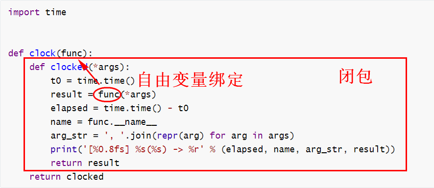
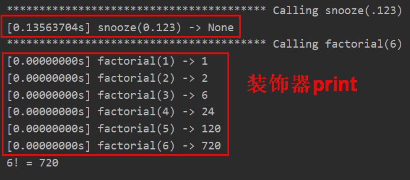

本书作者：测试开发刚哥，文章版权归个人所有，未经授权请勿转载。
在了解了Python函数装饰器基础知识和闭包之后，开始正式学习函数装饰器。
典型的函数装饰器
以下示例定义了一个装饰器，输出函数的运行时间：

函数装饰器和闭包紧密结合，入参func代表被装饰函数，通过自由变量绑定后，调用函数并返回结果。
使用clock装饰器：
import time
from clockdeco import clock
@clock
def snooze(seconds):
time.sleep(seconds)
@clock
def factorial(n):
return 1 if n < 2 else n*factorial(n-1)
if __name__=='__main__':
print('*' * 40, 'Calling snooze(.123)')
snooze(.123)
print('*' * 40, 'Calling factorial(6)')
print('6! =', factorial(6)) # 6!指6的阶乘
输出结果：

这是装饰器的典型行为：把被装饰的函数换成新函数，二者接受相同的参数，而且返回被装饰的函数本该返回的值，同时还会做些额外操作。
值得注意的是factorial()是个递归函数，从结果来看，每次递归都用到了装饰器，打印了运行时间，这是因为如下代码：
@clock
def factorial(n):
return 1 if n < 2 else n*factorial(n-1)
等价于：
def factorial(n):
return 1 if n < 2 else n*factorial(n-1)
factorial = clock(factorial)
factorial引用的是clock(factorial)函数的返回值，也就是装饰器内部函数clocked，每次调用factorial(n)，执行的都是clocked(n)。
叠放装饰器
@d1
@d2
def f():
print("f")
等价于：
def f():
print("f")
f = d1(d2(f))
参数化装饰器
怎么让装饰器接受参数呢？答案是：创建一个装饰器工厂函数，把参数传给它，返回一个装饰器，然后再把它应用到要装饰的函数上。
示例如下：
registry = set()
def register(active=True):
def decorate(func):
print('running register(active=%s)->decorate(%s)'
% (active, func))
if active:
registry.add(func)
else:
registry.discard(func)
return func
return decorate
@register(active=False)
def f1():
print('running f1()')
## 注意这里的调用
@register()
def f2():
print('running f2()')
def f3():
print('running f3()')
register是一个装饰器工厂函数，接受可选参数active默认为True，内部定义了一个装饰器decorate并返回。需要注意的是装饰器工厂函数，即使不传参数，也要加上小括号调用，比如@register()。
再看一个示例：
import time
DEFAULT_FMT = '[{elapsed:0.8f}s] {name}({args}) -> {result}'
## 装饰器工厂函数
def clock(fmt=DEFAULT_FMT):
# 真正的装饰器
def decorate(func):
# 包装被装饰的函数
def clocked(*_args):
t0 = time.time()
# _result是被装饰函数返回的真正结果
_result = func(*_args)
elapsed = time.time() - t0
name = func.__name__
args = ', '.join(repr(arg) for arg in _args)
result = repr(_result)
# **locals()返回clocked的局部变量
print(fmt.format(**locals()))
return _result
return clocked
return decorate
if __name__ == '__main__':
@clock()
def snooze(seconds):
time.sleep(seconds)
for i in range(3):
snooze(.123)
这是给典型的函数装饰器添加了参数fmt，装饰器工厂函数增加了一层嵌套，示例中一共有3个def。
标准库中的装饰器
Python内置了三个用于装饰方法的函数：property、classmethod和staticmethod，这会在将来的文章中讲到。本文介绍functools中的三个装饰器：functools.wraps、functools.lru_cache和functools.singledispatch。
functools.wraps
Python函数装饰器在实现的时候，被装饰后的函数其实已经是另外一个函数了（函数名等函数属性会发生改变），为了不影响，Python的functools包中提供了一个叫wraps的装饰器来消除这样的副作用（它能保留原有函数的名称和函数属性）。
示例，不加wraps：
def my_decorator(func):
def wrapper(*args, **kwargs):
'''decorator'''
print('Calling decorated function...')
return func(*args, **kwargs)
return wrapper
@my_decorator
def example():
"""Docstring"""
print('Called example function')
print(example.__name__, example.__doc__)
## 输出wrapper decorator
加wraps：
import functools
def my_decorator(func):
@functools.wraps(func)
def wrapper(*args, **kwargs):
'''decorator'''
print('Calling decorated function...')
return func(*args, **kwargs)
return wrapper
@my_decorator
def example():
"""Docstring"""
print('Called example function')
print(example.__name__, example.__doc__)
## 输出example Docstring
functools.lru_cache
lru是Least Recently Used的缩写，它是一项优化技术，把耗时的函数的结果保存起来，避免传入相同的参数时重复计算。
示例：
import functools
from clockdeco import clock
@functools.lru_cache()
@clock
def fibonacci(n):
if n < 2:
return n
return fibonacci(n-2) + fibonacci(n-1)
if __name__=='__main__':
print(fibonacci(6))
优化了递归算法，执行时间会减半。
注意，lru_cache可以使用两个可选的参数来配置，它的签名如下：
functools.lru_cache(maxsize=128, typed=False)
- maxsize：最大存储数量，缓存满了以后，旧的结果会被扔掉。
- typed：如果设为True，那么会把不同参数类型得到的结果分开保存，即把通常认为相等的浮点数和整型参数（如1和1.0）区分开。
functools.singledispatch
Python3.4的新增语法，可以用来优化函数中的大量if/elif/elif。使用@singledispatch装饰的普通函数会变成泛函数：根据第一个参数的类型，以不同方式执行相同操作的一组函数。所以它叫做single dispatch，单分派。
根据多个参数进行分派，就是多分派了。
示例，生成HTML，显示不同类型的Python对象：
import html
def htmlize(obj):
content = html.escape(repr(obj))
return '<pre>{}</pre>'.format(content)
因为Python不支持重载方法或函数，所以就不能使用不同的签名定义htmlize的变体，只能把htmlize变成一个分派函数，使用if/elif/elif，调用专门的函数，比如htmlize_str、htmlize_int等。时间一长htmlize会变得很大，跟各个专门函数之间的耦合也很紧密，不便于模块扩展。
@singledispatch经过深思熟虑后加入到了标准库，来解决这类问题：
from functools import singledispatch
from collections import abc
import numbers
import html
@singledispatch
def htmlize(obj):
# 基函数 这里不用写if/elif/elif来分派了
content = html.escape(repr(obj))
return '<pre>{}</pre>'.format(content)
@htmlize.register(str)
def _(text):
# 专门函数
content = html.escape(text).replace('\n', '<br>\n')
return '<p>{0}</p>'.format(content)
@htmlize.register(numbers.Integral)
def _(n):
# 专门函数
return '<pre>{0} (0x{0:x})</pre>'.format(n)
@htmlize.register(tuple)
@htmlize.register(abc.MutableSequence)
def _(seq):
# 专门函数
inner = '</li>\n<li>'.join(htmlize(item) for item in seq)
return '<ul>\n<li>' + inner + '</li>\n</ul>'
@singledispatch装饰了基函数。专门函数使用@<<base_function>>.register(<<type>>)装饰，它的名字不重要，命名为_，简单明了。
这样编写代码后，Python会根据第一个参数的类型，调用相应的专门函数。
小结
本文首先介绍了典型的函数装饰器：把被装饰的函数换成新函数，二者接受相同的参数，而且返回被装饰的函数本该返回的值，同时还会做些额外操作。接着介绍了装饰器的两个高级用法：叠放装饰器和参数化装饰器，它们都会增加函数的嵌套层级。最后介绍了3个标准库中的装饰器：保留原有函数属性的functools.wraps、缓存耗时的函数结果的functools.lru_cache和优化if/elif/elif代码的functools.singledispatch。
参考资料：
《流畅的Python》
https://github.com/fluentpython/example-code/tree/master/07-closure-deco
https://blog.csdn.net/liuzonghao88/article/details/103586634